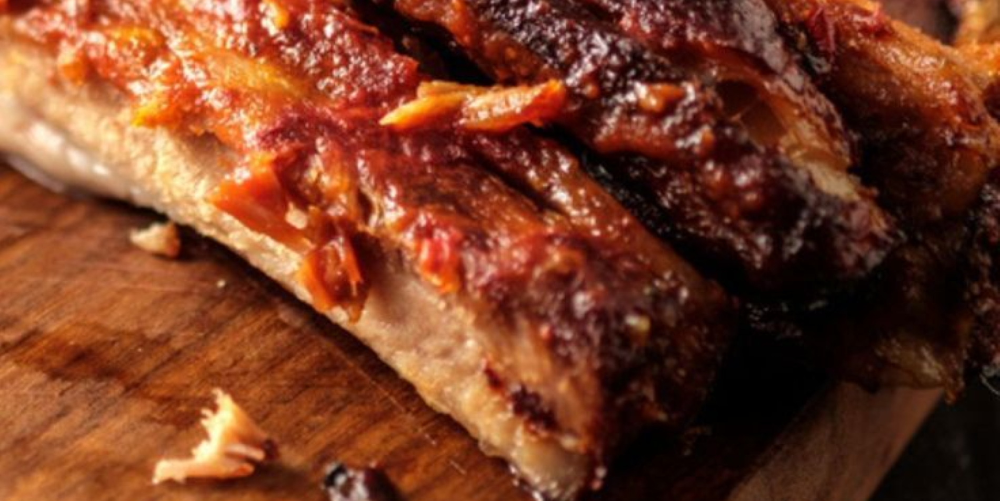

Costine di maiale:
- 800 g Costolette di maiale
- 1 l passata di pomodoro
- 1 Cipolla ( 60 g)
- 2 carote
- 1 cucchiaino concentrato di pomodoro
- Mezzo bicchiere vino bianco secco
- 3 bacche ginepro
- 3 chiodi di garofano
- 2 foglie alloro
- 1 rametto Rosmarino
- olio extravergine d’oliva

Procedimento:
- Iniziamo dal rosolare la carota e la cipolla tagliati finemente, per chi vuole, per chi piace, per chi lo ha in casa bisogna aggiungere anche il sedano, noi non lo amiamo.
- Lasciate arrotolare bene il fondo di cottura e dopodiché aggiungete la carne, lasciate anche essa rosolare bene sui vari lati.
- Sfumate con il vino e una volta evaporato l’alcol aggiungete le foglie di alloro, per non disperdere i chiodi di garofano le bacche di ginepro e gli aghi del rosmarino, vi consiglio di metterli all’interno di una bustina per te,
- A questo punto è il momento di aggiungere la passata di pomodororere, ed il concentrato di pomodoro,
- A questo punto non vi resta che aggiungere il sale,
- mettere il coperchio porre la fiamma al minimo sul fornello medio e lasciare lì per un’ora e mezza anche due ore
- A questo punto potete scegliere se utilizzare il sugo per condire la pasta e da mangiare come secondo la carne oppure come faccio io: potete ottenere un ragù super gustoso per il vostro primo piatto, vi basterà disossare la carne, che sarà talmente morbida che ci vorrà davvero un attimo a farlo, sfilacciarla ed unire il tutto al sugo, così condire la vostra pasta vi assicuro che otterrete un piatto super gustoso inoltre con una spolverata di ricotta salata prima di servirlo e davvero qualcosa di speciale.